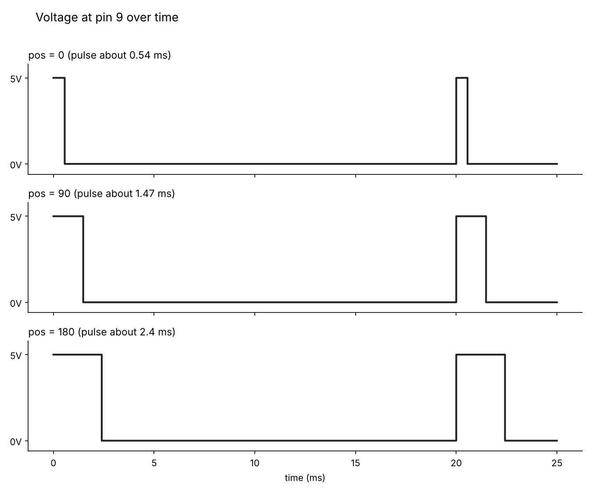

Assignment 4: Smart Fan
Small fan that turns on with a touch and speeds up when the room gets brighter.
It uses two libraries (Servo and CapacitiveSensor). The inputs are the touch pad and the photoresistor. The outputs are the servo and the LED.
Connections
| Part | Connects to |
|---|---|
| Servo signal wire | Pin 9 (red wire to 5V, brown wire to GND) |
| Photoresistor and 10kΩ resistor | 5V → photoresistor → A0 → 10kΩ → GND |
| Touch pad (bare wire) | Pin 2 → 1MΩ resistor → pin 4. The touch wire is in the same row as pin 4. |
| LED and 220Ω resistor | Pin 6 → 220Ω → LED long leg, LED short leg → GND |
1. Schematic and breadboard


Demo

Code
// Include the Servo library so we can control the servo motor
#include
// Include the CapacitiveSensor library so we can read the touch pad
#include
// Make a servo object called fan
Servo fan;
// Make a touch sensor object: first number is the send pin (2), second is the receive pin (4, where the touch wire is)
CapacitiveSensor touchPad = CapacitiveSensor(2, 4);
// Servo signal wire is on pin 9
const int SERVO_PIN = 9;
// Middle of the photoresistor divider is on A0
const int LIGHT_PIN = A0;
// LED is on pin 6
const int LED_PIN = 6;
// A touch reading above 300 counts as a touch (noise reads about 15-130, real touches read about 580-710)
const long TOUCH_THRESHOLD = 300;
// How many readings in a row must be above the threshold to count as a real touch
const int TOUCH_NEEDED = 3;
// Slowest the servo moves: wait 30 ms between each 1 degree step
const int SLOW_DELAY = 30;
// Fastest the servo moves: wait 5 ms between each 1 degree step
const int FAST_DELAY = 5;
// Lowest light reading seen during calibration, starts high so any reading beats it
int lightMin = 1023;
// Highest light reading seen during calibration, starts low so any reading beats it
int lightMax = 0;
// Tracks whether the system is on or off
bool systemOn = false;
// Tracks whether the pad was being touched on the last loop
bool wasTouched = false;
// Counts how many readings in a row have been above the threshold
int touchCount = 0;
// The servo's current position in degrees
int pos = 90;
// Which way the servo is sweeping: 1 is up, -1 is down
int dir = 1;
// The time of the last servo step, in milliseconds
unsigned long lastStep = 0;
// The time of the last touch toggle, so one touch can't count twice
unsigned long lastToggle = 0;
// The time of the last serial print
unsigned long lastPrint = 0;
void setup() {
// Turn off the touch sensor's auto-calibration so the readings stay steady
touchPad.set_CS_AutocaL_Millis(0xFFFFFFFF);
// Start the serial monitor so we can see the readings
Serial.begin(9600);
// Tell the servo library the servo is on pin 9
fan.attach(SERVO_PIN);
// Put the servo in the middle to start
fan.write(pos);
// Set the LED pin as an output
pinMode(LED_PIN, OUTPUT);
// Turn the LED on during calibration so I know to move my hand over the sensor
digitalWrite(LED_PIN, HIGH);
// Tell me what to do for step 1 of calibration
Serial.println("Step 1 of 2: cover the sensor with your hand now");
// Save the time step 1 started
unsigned long startTime = millis();
// Step 1 lasts 4 seconds
while (millis() - startTime < 4000) {
// Read the current brightness
int reading = analogRead(LIGHT_PIN);
// Keep the smallest reading seen so far (this is the dark end of the range)
lightMin = min(lightMin, reading);
// Wait a tiny bit between readings
delay(10);
}
// Blink the LED off for half a second to signal that step 2 is starting
digitalWrite(LED_PIN, LOW);
// Hold the blink for half a second
delay(500);
// Turn the LED back on for step 2
digitalWrite(LED_PIN, HIGH);
// Tell me what to do for step 2 of calibration
Serial.println("Step 2 of 2: shine a bright light on the sensor now");
// Save the time step 2 started
startTime = millis();
// Step 2 lasts 4 seconds
while (millis() - startTime < 4000) {
// Read the current brightness
int reading = analogRead(LIGHT_PIN);
// Keep the largest reading seen so far (this is the bright end of the range)
lightMax = max(lightMax, reading);
// Wait a tiny bit between readings
delay(10);
}
// Make sure the range is at least 50 wide so a missed calibration can't break the speed
lightMax = max(lightMax, lightMin + 50);
// Turn the LED off, calibration is done and the system starts off
digitalWrite(LED_PIN, LOW);
// Print the label for the calibrated range
Serial.print("Calibrated light range: ");
// Print the minimum
Serial.print(lightMin);
// Print a word between the numbers
Serial.print(" to ");
// Print the maximum and end the line
Serial.println(lightMax);
}
void loop() {
// Read the touch pad (30 is the number of samples the library takes)
long touchValue = touchPad.capacitiveSensor(30);
// If this reading is above the threshold
if (touchValue > TOUCH_THRESHOLD) {
// Count one more reading in a row above the threshold
touchCount++;
} else {
// A low reading means a spike, not a touch, so start counting again
touchCount = 0;
}
// Only count as touched after several readings in a row are high
bool touched = touchCount >= TOUCH_NEEDED;
// If this is a new touch and at least 500 ms have passed since the last toggle
if (touched && !wasTouched && millis() - lastToggle > 500) {
// Flip the system on or off
systemOn = !systemOn;
// Remember when this toggle happened
lastToggle = millis();
}
// Remember this touch state for the next loop
wasTouched = touched;
// The LED shows whether the system is on
digitalWrite(LED_PIN, systemOn);
// Start a running total for averaging the light
long total = 0;
// Take 10 readings
for (int i = 0; i < 10; i++) {
// Add this reading to the total
total += analogRead(LIGHT_PIN);
}
// Divide by 10 to get the average brightness, which smooths out noise
int light = total / 10;
// Turn brightness into a step wait time: dark = 30 ms (slow), bright = 5 ms (fast)
int stepDelay = map(light, lightMin, lightMax, SLOW_DELAY, FAST_DELAY);
// Keep the wait time between 5 and 30 in case the light goes outside the calibrated range
stepDelay = constrain(stepDelay, FAST_DELAY, SLOW_DELAY);
// Only move the servo if the system is on and enough time has passed since the last step
if (systemOn && millis() - lastStep >= stepDelay) {
// Remember when this step happened
lastStep = millis();
// Move one degree in the current direction
pos += dir;
// If we reached either end of the sweep
if (pos >= 180 || pos <= 0) {
// Turn around and sweep the other way
dir = -dir;
}
// Move the servo to the new position
fan.write(pos);
}
// Print to the serial monitor twice a second
if (millis() - lastPrint > 500) {
// Remember when this print happened
lastPrint = millis();
// Print the label for the touch reading
Serial.print("touch=");
// Print the raw touch value
Serial.print(touchValue);
// Print the label for the light reading
Serial.print(" light=");
// Print the averaged brightness
Serial.print(light);
// Print the label for the step wait time
Serial.print(" stepDelay=");
// Print the wait time
Serial.print(stepDelay);
// Print the label for the system state
Serial.print(" on=");
// Print the system state and end the line
Serial.println(systemOn);
}
} Why these values?
| Value in code | What it corresponds to in the circuit |
|---|---|
CapacitiveSensor(2, 4) | Pin 2 is the (send) pin and goes through the 1 MΩ resistor to pin 4 (receive) pin. The touchpad wire is in the same row as pin 4. When I had these two backwards, the touch pad did nothing. |
TOUCH_THRESHOLD = 300 | With nobody touching the wire, the readings were mostly under about 75, with a few spikes up to about 130 from the servo. Real touches read about 580–710. 300 sits well between the two. |
TOUCH_NEEDED = 3 | The reading has to stay above the threshold for 3 readings in a row. One random spike doesn't turn the fan on, but a real touch does. |
4000 (two calibration loops) | At startup I cover the photoresistor for 4 seconds to find the darkest reading, then shine a light on it for 4 seconds to find the brightest. My readings were 308 (about 1.5 V at A0, so the photoresistor is around 23 kΩ with my 10 kΩ resistor) and 727 (about 3.6 V, around 4 kΩ). The LED is on during calibration and blinks off between the two steps so I know when to switch. |
total / 10 | Averages 10 photoresistor readings. The sensor flickers a little, and the average keeps the speed from jumping around. |
5. Questions
Q1: Pin 9 Graph
The servo library doesn't put out a steady voltage. It sends a pulse every 20 ms (50 times per sec), and each pulse goes up to 5V and then back to 0V. The angle is set by how long the pulse stays "high": about 0.5 ms for 0°, about 1.5 ms for 90°, and about 2.4 ms for 180° (library's defaults). Each angle is held for 100 ms, so there are about 5 pulses of the same width before the next angle, and each step makes the pulse a little wider. The full sweep takes about 18 seconds, and then the loop starts over with the smallest pulse again.
| Setup | Bright (1 kΩ) | Dark (100 kΩ) |
|---|---|---|
| Photoresistor as R1 (top) V = 5 × 10 / (R1 + 10) | 5 × 10 / 11 = 4.55 V | 5 × 10 / 110 = 0.45 V |
| Photoresistor as R2 (bottom) V = 5 × R2 / (10 + R2) | 5 × 1 / 11 = 0.45 V | 5 × 100 / 110 = 4.55 V |
With the sensor on top, more light means a higher voltage. On the bottom, more light means a lower voltage. I used the top so "more light = bigger number," but if I flipped it I'd just flip the map() output range and the if comparison.

Q2: A reading that's wrong 1% of the time
I took a few readings and used the middle (the median). One "bad" value ends up at one end of the sorted list and gets ignored.
// Take 5 readings
for i = 0 to 4:
readings[i] = analogRead(sensorPin)
// Sort them from smallest to largest
sort(readings)
// The middle one is the answer, a single bad reading ends up at an end and is ignored
value = readings[2]Q3: A reading that's noisy by up to 10%
Random noise goes up and down, so it averages out. I take a bunch of readings and average them. More readings means less noise but a slower response.
// Start the total at zero
total = 0
// Take 10 readings
for i = 0 to 9:
total = total + analogRead(sensorPin)
// Divide by the number of readings to get the average
value = total / 10This is the same thing my code does for the photoresistor.
AI use
I used AI to help my troubleshoot my existing code. Some example prompts include: